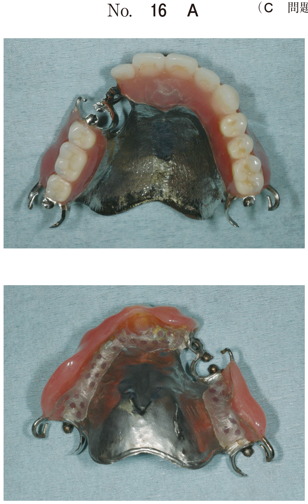
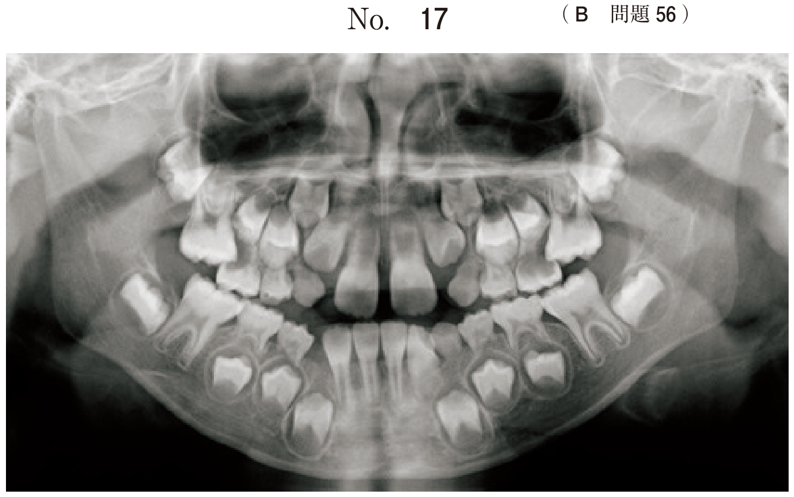

審美修復において、修復物の色を患歯や隣在歯に合わせるために、シェードガイドを用いて色調を選択する操作。
| 留意点 | 理由 |
|---|---|
| 短時間で行う | 色順応（慣れ）を避けるため |
| ラバーダム装着前に行う | 乾燥すると歯の色調が変化するため |
| 歯面を濡らした状態で行う | 湿潤状態が自然な色調を示す |
| 明るい自然光の下で行う | 無影灯は色温度が高く不適切 |
同じ色を長時間見続けると色順応が起こり、色の判別能力が低下する。そのため、シェードガイドと歯を見比べる操作は短時間で行う必要がある。
ラバーダム装着により歯面が乾燥すると、歯の透明感が低下し、実際より白く明るく見えてしまう。湿潤状態が本来の色調を示す。
コンポジットレジン修復における色調採得は、ラバーダム装着前に行う。
| 順序 | 操作 |
|---|---|
| 1 | 口腔内診査・咬合検査 |
| 2 | 色調採得（シェードテイキング） |
| 3 | ラバーダム防湿 |
| 4 | 齲蝕検知液による感染歯質の確認 |
| 5 | 窩洞形成・感染歯質除去 |
| 6 | 歯面処理（エッチング・プライミング・ボンディング） |
| 7 | コンポジットレジン充填・光照射 |
| 8 | 仕上げ研磨 |
審美修復を行う際に用いる器具の写真（別冊No.20）を別に示す。
この器具を用いる操作の留意点で正しいのはどれか。1つ選べ。

【解説】写真はシェードガイド。色調採得の留意点を問う問題。
4級コンポジットレジン修復に使用する器具の写真（別冊No.25）を別に示す。一連の治療過程を図に示す。
この器具を使用する時期はどれか。1つ選べ。

ア：初診時 → イ：ラバーダム装着前 → ウ：窩洞形成後 → エ：充填後 → オ：研磨後
【解説】シェードガイドによる色調採得はラバーダム装着前（イ）に行う。歯面が乾燥する前に、湿潤状態で色調を採得する。